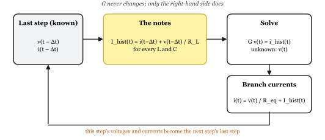
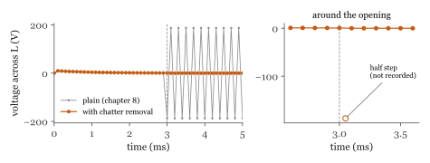
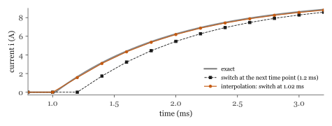

Tiny book of EMT simulation
Closing a switch

Flip a light switch. The light comes on. Boring?
Not for the network behind the switch. For a few thousandths of a second, its voltages and currents swing, overshoot and ring like a bell before they calm down. Close a big circuit breaker, or let lightning hit a line, and the same thing happens, only much more violently. These short, wild moments are called electromagnetic transients. EMT simulation is how we calculate them on a computer, so we can check that cables, transformers and breakers will survive them.
You do not need to be a maths wizard for this. If you know Ohm's law, you can do EMT simulation. There is one clever trick in the middle, called the companion model, and this book will walk you through it with real numbers, one step at a time.
The best way to learn it is with a simple example. But first, let us meet the cast.
Every circuit in this book is built from three characters (Figure 1).

The resistor is the easy one. Its current depends only on its voltage right now: v = R i. It does not care what happened a moment ago.
The inductor hates sudden changes in its current. Its voltage is L times how fast its current changes. To change the current suddenly, you would need an enormous voltage.
The capacitor is the mirror image. It hates sudden changes in its voltage. Its current is C times how fast its voltage changes.
The inductor and the capacitor have memory: what they do now depends on what they did a moment ago. That memory is the whole difficulty of EMT simulation, and, as you will see, also the whole trick.
Meet Phasor Pete and EMT Emma (Figure 2).

Pete uses phasors, like most power-system programs (load flow, short circuit). A phasor is like one photo of a sine wave, with a note on the back: "100 V, 50 Hz". That is all you need, as long as the wave keeps going the same way forever.
But right after a switch closes, nothing is a steady sine wave yet. A photo cannot show what happens next. For that, you need Emma's movie: one picture every small time step, Δt, where each picture is worked out from the one before it (Figure 3).

A small Δt gives a smooth movie, but more frames to calculate. Typical time steps are 20 to 100 μs for switching studies, a few μs for power electronics, and less than a microsecond for lightning.
Here is our circuit (Figure 4): a 10 V battery, a switch, a 1 Ω resistor and a 1 mH inductor. Everything is at rest. At t = 0, the switch closes. What does the current i do?

We picked this circuit for a reason: it is simple enough to solve exactly with pen and paper, so we can check our simulation against the right answer:
In words: the current climbs from 0 towards V/R = 10 A. After one time constant τ = 1 ms it has made it 63 % of the way.
Our goal: get the same answer with nothing but Ohm's law and a calculator. No differential equations.
We pick a time step Δt = 0.1 ms, and only calculate the circuit at t = Δt, 2Δt, 3Δt, and so on. The resistor is happy with that: at every instant, its current is just its voltage divided by R. The inductor is the problem. Its rule links "now" to "a moment ago":
Turn the inductor's rule around, and add up its voltage over one time step:
In words: current now = current one step ago + (1/L) × the area under the voltage curve during the step.
We do not know exactly how the voltage changed during the step. So we guess the simplest thing: a straight line from its old value to its new value. The area under a straight line is a trapezoid (Figure 5). This guess is called the trapezoidal rule.

In words: area ≈ width × the average of the two heights.
Put (2) into (1), and sort everything into two piles: things that belong to now, and things that belong to the last step:
The bracket only holds things from the last step, which we already know. It is the inductor's memory: a little note it writes to itself at the end of every step (Figure 6). We call it the history current, Ihist.

"Companion model" sounds complex, but it is not. Look at equation (3) again:
So for one time step, the inductor puts on a disguise: a resistor in parallel with a current source. The resistor never changes (as long as Δt stays the same). Only the current source is updated, once per step. The capacitor gets the same disguise, with RC = Δt/2C and a minus sign in its history current (Figure 7).

For our inductor: .
Swap the inductor for its disguise. Now the circuit has only a battery, two resistors and a current source (Figure 8). Ohm's law can handle that.

Node 1 is easy: the battery holds it at V = 10 V. Node 2 is unknown; call its voltage v2. Whatever current flows in through R must flow out through the companion model (Kirchhoff's current law):
In words: current in through R = current out through the disguised inductor. Solve for v2.
Then equation (4) gives the inductor current.
Stop and look at who is who in (5). On the left, v2 is now: the one thing we do not know. On the right, V, R and RL never change, and Ihist is made entirely from the last step: its current and its voltage, from the note. So every time step is the same little cycle (Figure 9): read the note from the last step, solve for the voltages now, work out the currents now, write the note for the next step.

Here are the four quantities of one inductor, and when each one is known:
| symbol | where it comes from | when |
|---|---|---|
| v(t−Δt), i(t−Δt) | the result of the last step | known before the step starts |
| Ihist(t) | = i(t−Δt) + v(t−Δt) / RL | computed first, from the two above |
| v(t) | from G v(t) = ihist(t) | the unknown: the solve gives it |
| i(t) | = v(t) / RL + Ihist(t) | last, from v(t) and the note |
Put the last two rows together and you are back at equation (3), the trapezoidal rule: i(t) − i(t−Δt) = (Δt/2L) [v(t) + v(t−Δt)]. So G v = i is nothing but that rule, written for the whole circuit at once, with everything from t−Δt moved to the right-hand side. The current i(t) never appears in it; it is read off afterwards, and then it is the i(t−Δt) of the next step.
In G v = i, the two sides live at different times. Left: now, the voltages we are solving for. Right: the last step, folded into the history currents. The currents of this step are not on the right-hand side; they are computed afterwards from the new voltages, and only then do they go into the next right-hand side.
Before t = 0, everything is at rest: i = 0 and v2 = 0. Grab a calculator and follow along. I tried not to skip a single step.
Step 1, t = 0.1 ms
Read the note from the last step (everything was zero):
Step 2, t = 0.2 ms
Now the note says what happened in step 1:
Step 3, t = 0.3 ms
Every step is the same three lines, over and over:
That is all a real EMT program does, just a few million times faster than you.
Work out step 4 yourself, using the step 3 numbers. Then check your answer in Table 1.
Answer: Ihist = 2.5937 A, v2 = 7.0536 V, i = 2.9464 A.
| step | t (ms) | Ihist (A) | v2 (V) | i (A) | exact i (A) |
|---|---|---|---|---|---|
| 1 | 0.1 | 0.0000 | 9.5238 | 0.4762 | 0.9516 |
| 2 | 0.2 | 0.9524 | 8.6168 | 1.3832 | 1.8127 |
| 3 | 0.3 | 1.8141 | 7.7961 | 2.2039 | 2.5918 |
| 4 | 0.4 | 2.5937 | 7.0536 | 2.9464 | 3.2968 |
| 5 | 0.5 | 3.2990 | 6.3819 | 3.6181 | 3.9347 |
| 6 | 0.6 | 3.9372 | 5.7741 | 4.2259 | 4.5119 |
| 7 | 0.7 | 4.5146 | 5.2242 | 4.7758 | 5.0341 |
| 8 | 0.8 | 5.0370 | 4.7266 | 5.2734 | 5.5067 |
| 9 | 0.9 | 5.5097 | 4.2765 | 5.7235 | 5.9343 |
| 10 | 1.0 | 5.9374 | 3.8692 | 6.1308 | 6.3212 |
Figure 10 puts our simulation next to the exact answer. After a few steps the two curves almost overlap, but the simulation is always a little behind. Why?

Our simulation has slow reflexes. In step 1, the trapezoidal rule assumed the inductor voltage rose in a straight line from 0 V (when everything was at rest) to 9.52 V. In reality it jumped to 10 V the instant the switch closed. A voltage that ramps up over one step acts, on average, like a voltage that jumps halfway through the step. So the simulation behaves as if the switch had closed half a step late, at Δt/2. Shift the exact curve by Δt/2 and the two agree very well (right of Figure 10). A smaller Δt means smaller reflex delay:
| Δt (ms) | simulated i (A) | error (A) | error after the Δt/2 shift (A) |
|---|---|---|---|
| 0.5 | 5.2000 | 1.12121 | 0.07633 |
| 0.1 | 6.1308 | 0.19039 | 0.00177 |
| 0.02 | 6.2842 | 0.03704 | 0.00006 |
Δt must be small compared with the fastest thing you want to see. Here the circuit's time constant is 1 ms, so a step of 0.1 ms is plenty.
Writing Kirchhoff's law by hand for every node gets boring fast. Computers do it with a matrix. Figure 11 shows a slightly bigger circuit: a 100 V, 50 Hz source feeding a line (R1 and L), a cable that adds some capacitance C, and a 100 Ω load. The time step is Δt = 50 μs.

In disguise, every element is a conductance (1 / resistance), plus maybe a current source:
| element | between nodes | conductance |
|---|---|---|
| R1 = 1 Ω | 1 and 2 | 1/1 = 1 S |
| L = 10 mH | 2 and 3 | Δt/2L = 0.0025 S |
| C = 10 μF | 3 and ground | 2C/Δt = 0.4 S |
| LOAD = 100 Ω | 3 and ground | 1/100 = 0.01 S |
Now we build the conductance matrix G, one element at a time, with a rubber stamp (Figure 12). The stamp for a conductance g between nodes k and m adds +g to the two diagonal spots (k,k) and (m,m), and −g to the two off-diagonal spots (k,m) and (m,k). If one end is ground, only the diagonal spot of the other end gets stamped.

Stamp all four elements, and you get:
Kirchhoff's current law for all the nodes at once is then one neat line:
In words: conductances × the voltages now = the history currents written at the last step.
v(t) is this step's unknown. ihist(t) is built before the solve, from the last step's voltages and currents: a history current Ihist flowing from node k to node m takes Ihist out of entry k and puts it into entry m. The branch currents of this step are not in it; they come afterwards, element by element, from i = v/Req + Ihist, and feed the next step's right-hand side. (In the rest of the chapter we write just i for this vector.)
The source is the boss of node 1: it tells node 1 exactly what voltage to have. So node 1 is known (K), and nodes 2 and 3 are unknown (U). Split G into those parts:
and solve only for the unknown voltages:
In words: move everything we already know (the boss's voltage) to the right-hand side, then solve for the rest.
Here is the beautiful part: G stays the same from one step to the next. Only the right-hand side changes. So the computer does the hard work (factorising GUU, with an LU or LDLT factorisation in EMTSim) only once. After that, each step is quick. That is why an EMT program can run millions of steps.
Step 1, t = 50 μs
The boss sets node 1 to . Everything was at rest before, so every note is blank: all history currents are zero, and iU = 0.
Node 2 jumps to 99.74 V, while node 3 barely moves: the inductor is not letting much current through yet. Its current is , and the capacitor's is .
Step 2, t = 100 μs
First, read the notes (equation 4 and Figure 7):
Ihist,L flows from node 2 to node 3, and Ihist,C from node 3 to ground. Then solve:
And so on, step after step. Figure 13 shows the movie of node 3 for the first 80 ms. When the source switches on, the inductor and the capacitor play catch with the energy, at their natural frequency . The voltage overshoots to 153.2 V. Then the load calms the ringing down, and we end up exactly where Phasor Pete's photo says we should.

Once: put every element in disguise, stamp G, and factorise GUU.
Every step (t = t + Δt):
This is exactly the order EMTSim uses.
A switch is just a resistor with two moods: tiny when it is closed (EMTSim uses 0.01 Ω) and huge when it is open (1 MΩ). A fault is a switch from a node to ground.
When a switch changes its mood, its conductance changes, so G changes. That is step 1 of the recipe: re-stamp G, factorise it again, and carry on. The notes (history currents) are not touched, so the inductors and capacitors remember their currents and voltages across the switching instant, just like real ones.
Let us short-circuit node 3 to ground at 30 ms and remove the short at 60 ms (Figure 14).

While the fault is open, it stamps a tiny 1/106 S onto G33. When it closes, it stamps 1/0.01 = 100 S:
Figure 15 shows what happens. When the fault hits, node 3 collapses to almost zero, and the capacitor dumps its charge into the fault. The current in L grows to about 32.3 A; the inductor is the only thing limiting it. When the fault is removed, the capacitor and the inductor play catch again at about 503 Hz, until the network settles back to normal.

Every number in this book was calculated with the same recipe EMTSim uses, and checked against it. EMTSim gives the same numbers, to the last digit. So you can run every example yourself.
An EMTSim netlist has one line per element: its type, the two nodes it connects (0 is ground) and its value. This is the circuit of chapter 4:
# Tiny book of EMT simulation, chapter 4: closing a switch on a 10 V battery, 1 ohm, 1 mH. # The circuit is at rest before t = 0; the battery is connected at t = 0. # The book works through the plain trapezoidal rule (chapter 8 shows its chatter), so # chatter removal and switching interpolation are off here. .options chatter=off interp=off .tran 0.0001 0.005 V 0 1 10 0 0 # BATTERY (peak 10 V, angle 0, frequency 0 = DC) R 1 2 1 # R L 2 0 0.001 # L
and this is the network with the fault, from chapter 6:
# Tiny book of EMT simulation, chapter 6: the network of chapter 5 with a fault at node 3 # from 30 ms to 60 ms. # The book works through the plain trapezoidal rule (chapter 8 shows its chatter), so # chatter removal and switching interpolation are off here. .options chatter=off interp=off .tran 0.00005 0.08 V 0 1 100 0 50 # SOURCE R 1 2 1 # R1 L 2 3 0.01 # L C 3 0 10e-6 # C R 3 0 100 # LOAD F 3 0 0.03 0.06 # FAULT
Run them from the EMTSim folder, with either the C++ or the Python solver:
build\emtsim.exe docs\book\circuits\rl.net python main.py docs\book\circuits\network_fault.net python plot.py
The node voltages go to results.csv, and the element currents to
currents.csv. Compare the first lines of results.csv with Table 1. Or open
the circuit editor with gui.bat, draw the circuit, press Run, and drag across a plot to
zoom in on the first few steps.
So far we have only closed switches. Let us take the circuit of chapter 4 again, wait until the current has almost reached 10 A, and then open the switch at t = 3 ms (Figure 16).

Remember the inductor's personality: it hates sudden changes in its current. In a real circuit, when the switch opens, the inductor fights back by pushing the voltage across the opening contacts up very high (that is why breakers draw arcs), and the current dies away very quickly. Now look at what our simulation says (Figure 17).


The current looks fine. Just before the switch opens, it is 9.35 A, and from the next step on, it is practically zero (less than 0.0002 A).
But look at the voltage across the inductor. Just before the opening, it is 0.56 V. In the steps after it, the simulation says −187.5, 187.5, −187.4, 187.4, −187.4 V, and so on. It flips sign at every single step, for as long as we care to simulate. No current flows, and yet the inductor voltage keeps jumping between plus and minus 187 V. Spooky.
Does the voltage in a real circuit do that? Or is there a ghost in our simulation? Think about it before you turn the page; chapter 9 catches it.
Use equation (4), with the 1 MΩ of the open switch in series with RL = 20 Ω. What happens to Ihist from one step to the next? Who wrote the wrong note?
Look at the inductor's note again, equation (4): Ihist = i(t−Δt) + v(t−Δt)/RL. It remembers the voltage of the last step as well as the current. After the switch opens the current must be zero at every step, so equation (4) says 0 = v(t)/RL + v(t−Δt)/RL, that is
The voltage has to flip sign every step, forever. That is the ghost: the trapezoidal rule averages the voltage over each step, so a sudden jump can only be represented by an endless alternation around the true value. Nothing in the circuit does this; the note does. Programs call it numerical chatter, and it appears after every switching that jumps an inductor voltage or a capacitor current.
The cure is to forget the old voltage, just for a moment. Right after a switching we take two half steps of Δt/2 with a different rule, backward Euler, whose note holds only the current:
In words: the same conductance Δt/2L as before, so G does not change; only the note is shorter.
With a step of exactly Δt/2, backward Euler has the same conductance as the trapezoidal rule, so nothing has to be rebuilt or refactorised. After the two half steps the trapezoidal rule takes over again as if nothing had happened. This is called critical damping adjustment, CDA; the half-step solution is not written to the output, so the time grid stays the same.
The circuit of chapter 8, with chatter removal
At 3.0 ms the switch is still closed in that sample: i = 9.3985 A, v3 = 0.5075 V. Then it opens. First half step, to 3.05 ms: the note is the current alone, 9.3985 A. The open switch (1 MΩ) lets almost nothing through, so the inductor can only keep its note by pushing its voltage to
That is the inductor's one protest at being switched off (in a real breaker it is the arc). Second half step, to 3.1 ms: the note is now 0.0002 A, so v3 = −0.004 V and i = 0.0000 A. From here the trapezoidal rule continues with a note of −0.0002 A: at 3.2 ms v3 = 0.004 V. A few millivolts remain, the echo of the 0.0002 A that leaked through the 1 MΩ during the half step; the 187 V ghost is gone (Figure 18).

The second problem with a fixed time step is simpler to see. A switch is told to close at 1.02 ms, but the simulation only visits 1.0 ms and 1.2 ms. If it can only act at a time point, it closes at 1.2 ms, and the whole current curve starts almost a step late (Figure 19, squares).
The fix: take the step from 1.0 to 1.2 ms as usual, then notice that the switch should have acted at a fraction α = (1.02 − 1.0) / 0.2 = 0.1 of the way through it. Go back to that instant by interpolating the whole state (every node voltage, every note) between the two time points,
close the switch there, rebuild G, and continue from 1.02 ms: two half steps (chatter removal, since the switching jumps the inductor voltage), then normal steps. The simulation is now on a time grid shifted by 0.02 ms, so after the next step it interpolates back onto the original grid; the output has the same time points as before. The same trick finds a breaker's current zero, or the instant a diode's current crosses zero, inside a step.

demo_interpolation.net). At 1.4 ms the exact current is 3.16 A; the switch
acting at the next time point gives 1.73 A, interpolation 3.08 A.The two belong together. Interpolation alone would still leave the trapezoidal rule's half-step delay after the switching (and the chatter); chatter removal alone acts one step late. With both, a switching acts at its instant as accurately as the trapezoidal rule itself allows.
Both methods are on by default in EMTSim; the book's circuits switch them off with
the line .options chatter=off interp=off. Run chapter 8's circuit with
run.bat circuits\demo_chatter.net --chatter=on, or open demo_chatter and
demo_interpolation in the editor: Run, tick Hold run, tick the option under Run
settings, Run again, and the two results are drawn over each other. docs/switching.md has the
details and where the code is.
much smaller than the fastest thing you want to see: the simulation acts about Δt/2 late after a sudden jump.
closed 0.01 Ω, open 1 MΩ. When one changes: re-stamp G, factorise again, keep the notes.